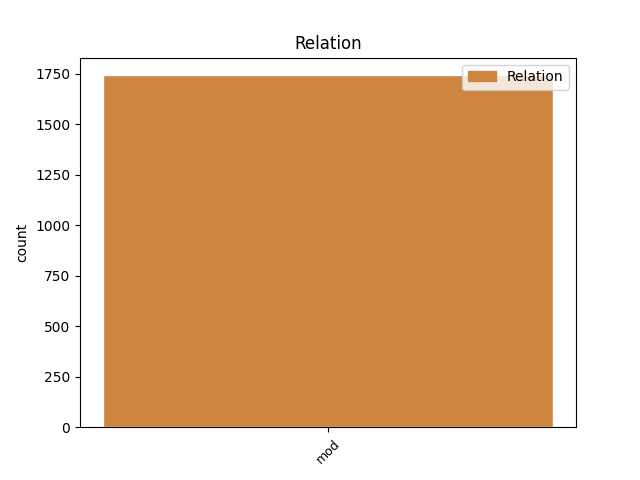
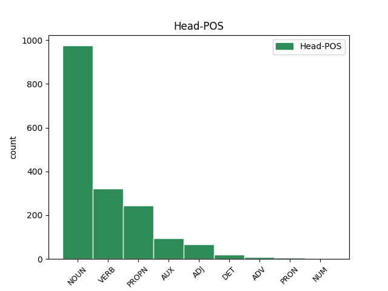
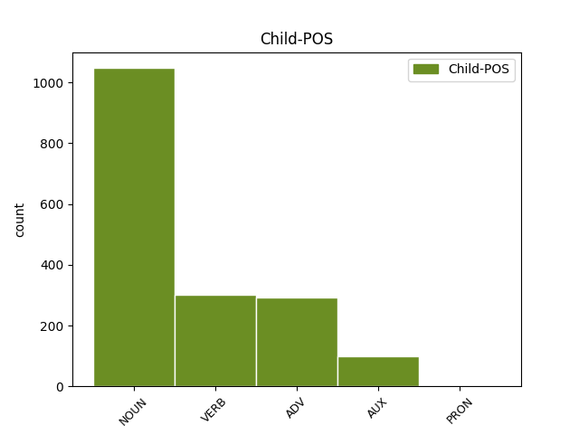

Distribution of features within this leaf



Agreement Rules sorted by frequency.
- When the dependent token is the modifer(mod) of the head token, and the dependent token is NOUN.
1 Нито _ _ _ _ 0 _ _ _
2 Еврокомисията _ _ _ _ 0 _ _ _
3 , _ _ _ _ 0 _ _ _
4 нито _ _ _ _ 0 _ _ _
5 отделните _ _ _ _ 0 _ _ _
6 страни страна NOUN Ncfpi Definite=Ind|Gender=Fem|Number=Plur 0 _ _ _
7 членки членка NOUN Ncfpi Definite=Ind|Gender=Fem|Number=Plur 6 mod _ _
8 разполагат _ _ _ _ 0 _ _ _
9 с _ _ _ _ 0 _ _ _
10 надеждни _ _ _ _ 0 _ _ _
11 прогнозни _ _ _ _ 0 _ _ _
12 данни _ _ _ _ 0 _ _ _
13 за _ _ _ _ 0 _ _ _
14 разходите _ _ _ _ 0 _ _ _
15 , _ _ _ _ 0 _ _ _
16 свързани _ _ _ _ 0 _ _ _
17 с _ _ _ _ 0 _ _ _
18 разширяването _ _ _ _ 0 _ _ _
19 . _ _ _ _ 0 _ _ _
1 Но _ _ _ _ 0 _ _ _
2 , _ _ _ _ 0 _ _ _
3 струва струва-(си) VERB Vniif-r3s Aspect=Imp|Mood=Ind|Number=Sing|Person=3|Tense=Pres|VerbForm=Fin|Voice=Act 8 mod _ _
4 ми _ _ _ _ 0 _ _ _
5 се _ _ _ _ 0 _ _ _
6 , _ _ _ _ 0 _ _ _
7 президентът _ _ _ _ 0 _ _ _
8 изпусна изпусна-(се) VERB Vpptf-o3s Aspect=Perf|Mood=Ind|Number=Sing|Person=3|Tense=Past|VerbForm=Fin|Voice=Act 0 _ _ _
9 възможността _ _ _ _ 0 _ _ _
10 да _ _ _ _ 0 _ _ _
11 привлече _ _ _ _ 0 _ _ _
12 вниманието _ _ _ _ 0 _ _ _
13 на _ _ _ _ 0 _ _ _
14 американците _ _ _ _ 0 _ _ _
15 върху _ _ _ _ 0 _ _ _
16 един _ _ _ _ 0 _ _ _
17 важен _ _ _ _ 0 _ _ _
18 за _ _ _ _ 0 _ _ _
19 тях _ _ _ _ 0 _ _ _
20 закон _ _ _ _ 0 _ _ _
1 Телевизията _ _ _ _ 0 _ _ _
2 не _ _ _ _ 0 _ _ _
3 посочила _ _ _ _ 0 _ _ _
4 повече повече ADV Md-pi Definite=Ind|Degree=Pos|Number=Plur|NumType=Card 5 mod _ _
5 подробности подробност NOUN Ncfpi Definite=Ind|Gender=Fem|Number=Plur 0 _ _ _
6 за _ _ _ _ 0 _ _ _
7 подготвяната _ _ _ _ 0 _ _ _
8 нова _ _ _ _ 0 _ _ _
9 политика _ _ _ _ 0 _ _ _
10 на _ _ _ _ 0 _ _ _
11 израелската _ _ _ _ 0 _ _ _
12 армия _ _ _ _ 0 _ _ _
13 , _ _ _ _ 0 _ _ _
14 отбелязва _ _ _ _ 0 _ _ _
15 АФП _ _ _ _ 0 _ _ _
16 . _ _ _ _ 0 _ _ _
1 Майка _ _ _ _ 0 _ _ _
2 й _ _ _ _ 0 _ _ _
3 заяви _ _ _ _ 0 _ _ _
4 , _ _ _ _ 0 _ _ _
5 че _ _ _ _ 0 _ _ _
6 се _ _ _ _ 0 _ _ _
7 смята смятам VERB Vpitf-r3s Aspect=Imp|Mood=Ind|Number=Sing|Person=3|Tense=Pres|VerbForm=Fin|Voice=Act 0 _ _ _
8 за _ _ _ _ 0 _ _ _
9 виновна _ _ _ _ 0 _ _ _
10 , _ _ _ _ 0 _ _ _
11 защото _ _ _ _ 0 _ _ _
12 е съм AUX Vxitf-r3s Aspect=Imp|Mood=Ind|Number=Sing|Person=3|Tense=Pres|VerbForm=Fin|Voice=Act 7 mod _ _
13 купувала _ _ _ _ 0 _ _ _
14 евтино _ _ _ _ 0 _ _ _
15 месо _ _ _ _ 0 _ _ _
16 . _ _ _ _ 0 _ _ _
1 Внезапно _ _ _ _ 0 _ _ _
2 дланта _ _ _ _ 0 _ _ _
3 й _ _ _ _ 0 _ _ _
4 натисна _ _ _ _ 0 _ _ _
5 по _ _ _ _ 0 _ _ _
6 познат _ _ _ _ 0 _ _ _
7 му аз PRON Ppetds3m Case=Dat|Gender=Masc|Number=Sing|Person=3|PronType=Prs 8 mod _ _
8 начин начин NOUN Ncmsi Definite=Ind|Gender=Masc|Number=Sing 0 _ _ _
9 неговото _ _ _ _ 0 _ _ _
10 ляво _ _ _ _ 0 _ _ _
11 слепоочие _ _ _ _ 0 _ _ _
12 и _ _ _ _ 0 _ _ _
13 размаза _ _ _ _ 0 _ _ _
14 там _ _ _ _ 0 _ _ _
15 някаква _ _ _ _ 0 _ _ _
16 течност _ _ _ _ 0 _ _ _
17 , _ _ _ _ 0 _ _ _
18 която _ _ _ _ 0 _ _ _
19 с _ _ _ _ 0 _ _ _
20 бързината _ _ _ _ 0 _ _ _
21 на _ _ _ _ 0 _ _ _
22 етер _ _ _ _ 0 _ _ _
23 проникна _ _ _ _ 0 _ _ _
24 в _ _ _ _ 0 _ _ _
25 черепа _ _ _ _ 0 _ _ _
26 му _ _ _ _ 0 _ _ _
27 . _ _ _ _ 0 _ _ _
Disagree Examples:
1 Ние _ _ _ _ 0 _ _ _
2 , _ _ _ _ 0 _ _ _
3 разбира разбирам-(се) VERB Vpitf-r3s Aspect=Imp|Mood=Ind|Number=Sing|Person=3|Tense=Pres|VerbForm=Fin|Voice=Act 7 mod _ _
4 се _ _ _ _ 0 _ _ _
5 , _ _ _ _ 0 _ _ _
6 не _ _ _ _ 0 _ _ _
7 можем мога VERB Vpiif-r1p Aspect=Imp|Mood=Ind|Number=Plur|Person=1|Tense=Pres|VerbForm=Fin|Voice=Act 0 _ _ _
8 да _ _ _ _ 0 _ _ _
9 се _ _ _ _ 0 _ _ _
10 задоволим _ _ _ _ 0 _ _ _
11 с _ _ _ _ 0 _ _ _
12 това _ _ _ _ 0 _ _ _
13 . _ _ _ _ 0 _ _ _
1 Купих _ _ _ _ 0 _ _ _
2 от _ _ _ _ 0 _ _ _
3 пазара _ _ _ _ 0 _ _ _
4 кола кола NOUN Ncfsi Definite=Ind|Gender=Fem|Number=Sing 0 _ _ _
5 дърва дърво NOUN Ncnpi Definite=Ind|Gender=Neut|Number=Plur 4 mod _ SpaceAfter=No
6 . _ _ _ _ 0 _ _ _
1 На _ _ _ _ 0 _ _ _
2 завоя _ _ _ _ 0 _ _ _
3 на _ _ _ _ 0 _ _ _
4 пътя _ _ _ _ 0 _ _ _
5 , _ _ _ _ 0 _ _ _
6 откъм _ _ _ _ 0 _ _ _
7 горната _ _ _ _ 0 _ _ _
8 махала _ _ _ _ 0 _ _ _
9 , _ _ _ _ 0 _ _ _
10 се _ _ _ _ 0 _ _ _
11 показа _ _ _ _ 0 _ _ _
12 голяма _ _ _ _ 0 _ _ _
13 тълпа тълпа NOUN Ncfsi Definite=Ind|Gender=Fem|Number=Sing 0 _ _ _
14 хора хора NOUN Nc-li Definite=Ind|Number=Ptan 13 mod _ SpaceAfter=No
15 . _ _ _ _ 0 _ _ _
1 Аз _ _ _ _ 0 _ _ _
2 малко малко ADV Md--i Definite=Ind|Degree=Pos|Number=Plur|NumType=Card 3 mod _ _
3 разбирам разбирам-(се) VERB Vpitf-r1s Aspect=Imp|Mood=Ind|Number=Sing|Person=1|Tense=Pres|VerbForm=Fin|Voice=Act 0 _ _ _
4 от _ _ _ _ 0 _ _ _
5 тези _ _ _ _ 0 _ _ _
6 работи _ _ _ _ 0 _ _ _
7 , _ _ _ _ 0 _ _ _
8 та _ _ _ _ 0 _ _ _
9 затова _ _ _ _ 0 _ _ _
10 мога _ _ _ _ 0 _ _ _
11 да _ _ _ _ 0 _ _ _
12 сгреша _ _ _ _ 0 _ _ _
13 . _ _ _ _ 0 _ _ _
1 Гроздан _ _ _ _ 0 _ _ _
2 се _ _ _ _ 0 _ _ _
3 дразнеше дразня-(се) VERB Vpitf-m3s Aspect=Imp|Mood=Ind|Number=Sing|Person=3|Tense=Imp|VerbForm=Fin|Voice=Act 0 _ _ _
4 все _ _ _ _ 0 _ _ _
5 повече повече ADV Md--i Definite=Ind|Degree=Pos|Number=Plur|NumType=Card 3 mod _ SpaceAfter=No
6 . _ _ _ _ 0 _ _ _